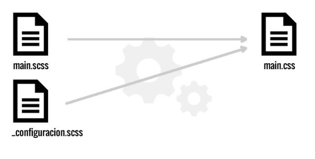

SASS
Syntaxis Básica
Comentarios
Los comentarios que hagas en un archivo .scss con dos barras inclinadas no aparecerán en el CSS resultante. Esto es muy útil para comentarios que no quieres que aparezcan en el CSS final.
// Este comentario no saldrá
/* Este comentario sí saldrá*/
body {
font: {
family: Arial, sans-serif;
size: 100$;
weight: normal;
}
}
Importando en SASS
El uso de @import es diferente en Sass que en CSS. En una hoja de estilos CSS supone una nueva llamada al servidor para cargar otra hoja de estilos y esperar a que se cargue para aplicar los nuevos estilos (razón por la cual se usa poco), por ejemplo supongamos que tenemos dentro de nuestro css:
/*
* Importamos los estilos de menu.css
*/
@import "menu.css";
Ejemplo
Creamos un archivo _menu.scss en nuestro directorio SASS
.menu {
margin: 0;
padding: 0;
list-style-type: none;
}
.menu > li {
display: inline-block;
margin: 0 0 10px 10px;
}
Y lo importamos en nuestro archivo principal
// Importamos los estilos de menu.scss
// cuando simpore compile main.scss
@import "menu";
Anidación de Selectores
Suponiendo el siguiente codigo CSS
.contenido {
width: 300px;
background: #eaeaea;
}
.contenido h2 {
font-size: 18px;
}
.contenido p {
font-size: 14px
En SASS
En sass seria
.contenido {
width: 300px;
background: #eaeaea;
h2 {
font-size: 18px;
}
p {
font-size: 14px;
}
}
Selector Padre
Cuando estamos anidando el símbolo & se comporta igual que un comodín, y se refiere siempre al selector “padre”. Por ejemplo:
.contenido {
border: 1px solid #999;
padding: 10px;
a {
text-decoration: underline;
&:hover {
color: green;
}
}
La anidación es una herramienta potente, pero sobreexplotarla lleva a escribir CSS con demasiada especificidad, lo que no se recomienda. Trata de mantener 3 niveles como maximo de anidacion

Mixins
Los Mixins te permiten reutilizar estilos (propiedades e incluso selectores) sin tener que copiarlos y pegarlos cada vez que quieres utilizarlos.
Teniendo el siguiente codigo
.btn-a {
background: blue;
color: white;
width: 30px;
border-radius: 10px;
}
.btn-b {
background: black;
color: white;
width: 30px;
border-radius: 10px;
}
Como vemos, todo se repite salvo el color de fondo. Este es un ejemplo de repetición de código que probablemente queramos evitar en nuestra hoja .scss, y lo podemos hacer gracias a los Mixin
Creando nuestro primer mixin
Para escribir un Mixin lo hacemos escribiendo @Mixin seguido por el nombre del mismo. Por ejemplo, para el caso anterior, escribiríamos en el Mixin las propiedades que repetíamos. Y luego en cada botón incluimos el Mixin con @include:
/* style.scss */
@Mixin botones {
color: white;
width: 30px;
border-radius: 10px;
}
.btn-a {
@include botones;
background: blue;
}
.btn-b {
@include botones;
background: black;
}
Tener en cuenta:
- Como regla general está bien escribir primero el @include y luego poner las propiedades singulares (como background: black;) para poder sobreescribir alguna de las que nos trae el Mixin si fuera necesario.
- Asegúrate que el @Mixin está declarado antes de usar los @include. Por ejemplo, puedes crear un parcial (partial) que se llame _mixins.scss y lo importamos antes del resto de parciales (puedes ver qué es un parcial en Sass: Comentarios, Importaciones y Anidación)
- @include no es lo mismo que @import. Con @include incluimos un mixin, mientras que con @import incluimos un archivo. En el mismo artículo que el punto anterior verás el uso de @import.
Mixins con Parametros
El poder real de los Mixins está en que podemos pasar argumentos a los mismos. Los argumentos se declaran como una lista de variables dentro de un paréntesis. A cada una de estas variables se le asigna un valor cada vez que se usa el mixin. De esta manera no generaremos código repetido cada vez que lo usemos, ya que gracias a los argumentos podemos obtener un código singular para cada caso.
Ejemplo
@mixin rounded($radio) {
border-radius: $radio;
-moz-border-radius: $radio;
-webkit-border-radius: $radio;
}
#footer { @include rounded(5px); }
#sidebar { @include rounded(8px); }
Aplicando el mixin
#footer {
border-radius: 5px;
-moz-border-radius: 5px;
-webkit-border-radius: 5px; }
#sidebar {
border-radius: 8px;
-moz-border-radius: 8px;
-webkit-border-radius: 8px; }
A los argumentos del mixin se les puede dar también un valor por defecto, de tal manera que si al usar el Mixin no se pasa ese argumento, se le asignará el valor por defecto. Si queremos incluir un valor por defecto en el ejemplo anterior, haríamos:
@mixin rounded($radio: 10px)) {
border-radius: $radio;
-moz-border-radius: $radio;
-webkit-border-radius: $radio;
}
#navbar li { @include rounded; }
#footer { @include rounded(5px); }
#sidebar { @include rounded(8px); }
El uso de Mixins es tan potente que encontraréis librerías, páginas web y artículos de blogs dedicados exclusivamente a compartir Mixins
Variables
Las variables en SASS se escriben con el prefijo $. Esta variable será posible de utilizar a lo largo de nuestro documento scss o en otros documentos con la etiqueta @import
$colortipografia: #333;
p{
text-align:center;
color: $colortipografia;
}
Podemos crear, por ejemplo, un archivo que podemos llamar _configuracion.scss donde pueden estar nuestras variables e importarlo, almacenando asi las variables en un solo archivo y facilitando la mantención del codigo.
Tipos de Valores en Variables SASS
Algunos valores que pueden almacenar las variables
// Booleano
$sombra: true;
$borde: false;
// Números, con o sin unidades
$margen: 4px;
$font-size: 3rem;
$line-height: 1.5;
// Cadenas de texto,con o sin comillas
$principal: Georgia;
$fuente: 'Helvetica Neue';
$mensaje: "Cargando...";
// Listas
$nombres: Juan, Luis, María;
$margin: 10px 10px 0 20px;
// Null, se usan sobre todo en condicionales
$bordes: null;
Variables ¿Globales?
Si definimos una variable fuera de cualquier declaración de estilos, esta variable y su valor estarán disponibles de forma global. Pero, ¿qué sucede si definimos una variable dentro de una declaración como por ejemplo:
.contenido {
p {
$color: #999;
color: $color;
}
}
.lateral {
color: $color;
}
¿Y qué sucede si tenemos una variable global y luego cambiamos su valor dentro de una declaración?
$color: black;
.contenido {
p {
$color: #999;
color: $color;
}
}
CV reloaded
Crea una nueva versión de tu CV, usando las siguientes propiedades y herramientas
- Sass y Compass
- Variables
- Al menos 1 mixin
- Animaciones y Transiciones
- WebFonts
- Herencia
PD: usa box-sizing: border-box en tus cajas
Extend
@extend extiende las propiedades de un selector declarado anteriormente al selector en el cual se utiliza, por ejemplo
.estilo{
color:red;
border-radius:10px;
}
.boton{
@extend .estilo;
}